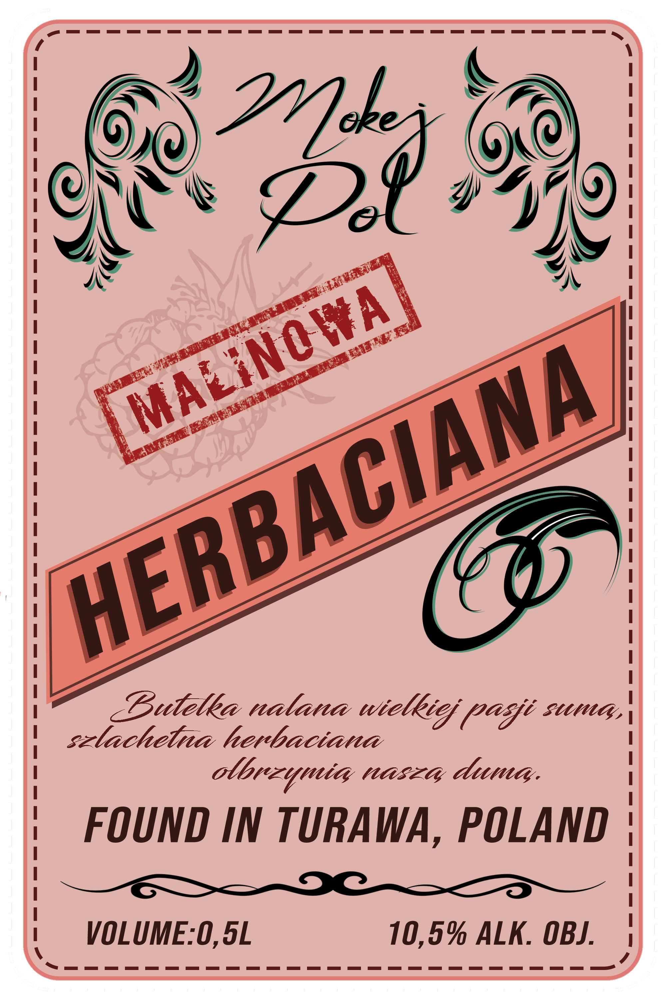
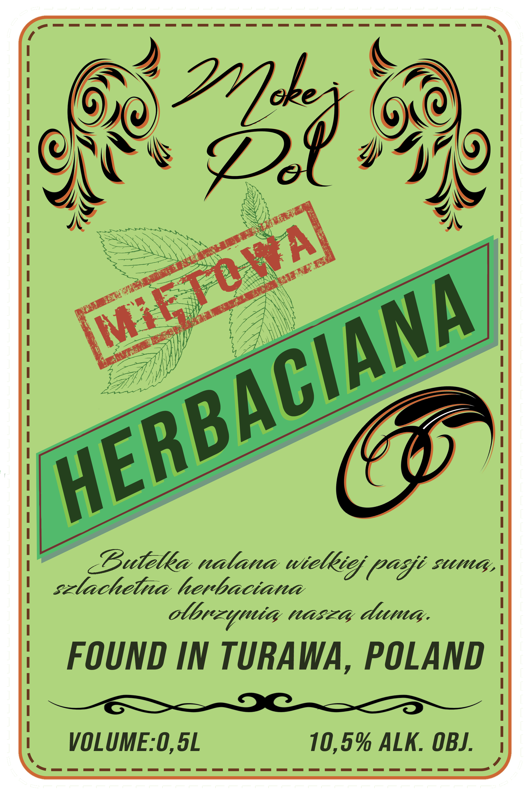
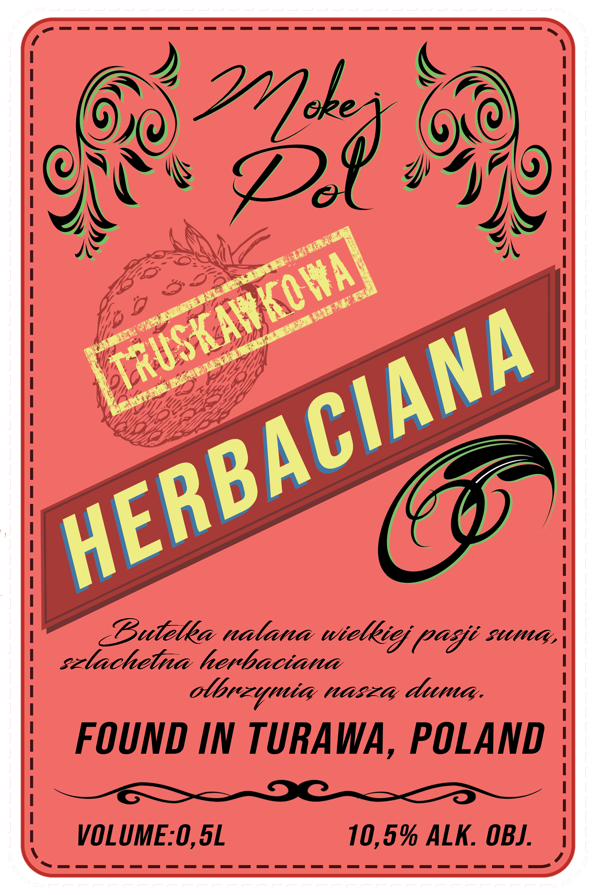
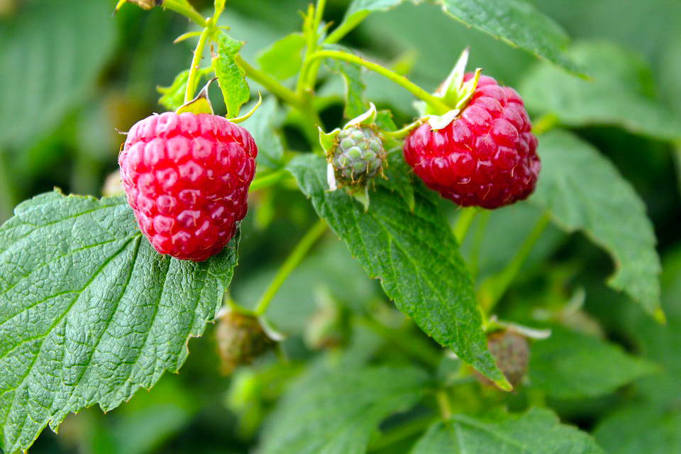

Ta strona zawiera treści dotyczące napojów alkoholowych. Czy masz ukończone 18 lat?
“Butelka nalana wielkiej pasji sumą,
szlachetna herbaciana olbrzymią naszą dumą.”
Found in Turawa, Poland
Rok 2018. Turawa, skrzyżowanie Harcerskiej i Biwakowej. Pięciu przyjaciół, letni wieczór i bezgraniczna ciekawość — tak zaczęła się historia Herbacianej. Co się stanie, gdy połączymy szlachetny spirytus z aromatyczną herbatą i naturalnym sokiem owocowym? Odpowiedź okazała się prostsza niż pytanie — powstanie coś wyjątkowego.
Pierwsza degustacja odbyła się przy ognisku, nad brzegiem jeziora. Smak był tak nieoczekiwanie harmonijny, że wiedzieliśmy — to nie był tylko eksperyment. To było odkrycie. Odkrycie, które zasługiwało na coś więcej niż wspomnienie.
Tamtego wieczoru zrodził się nie tylko napój, ale i marzenie. Marzenie o marce, która przeniesie ducha wspólnych chwil, polskiej natury i rzemieślniczej pasji do każdej butelki. Tak narodził się MokejPol.
Gdy emocje opadły, a ostatnie iskry ogniska dogasały, pięciu założycieli wiedziało, że ten moment trzeba uwiecznić. Nie mieli przy sobie ani papieru, ani notariusza — ale mieli determinację. Pierwszy zarys firmy MokejPol, uroczysta umowa założycielska, został spisany na tym, co było pod ręką — na papierze toaletowym. Na kruchym zwoju złożono pięć podpisów, deklarację o zachowaniu oryginalnej receptury, przysięgę wierności tradycji oraz spisano pierwotny przepis napoju. Ten skromny, lecz niezniszczalny duchem akt stał się symbolem tego, czym MokejPol jest do dziś — autentyczny, bez pretensji, zrodzony z czystej pasji.
Mokej — od pierwszych liter imion pięciu założycieli, którzy przy ognisku w Turawie stworzyli coś, co przetrwało próbę czasu.
Pol — bo korzenie tej marki są głęboko polskie. Turawa, natura, przyjaciele — to nasza duma.

Słodycz letnich malin spleciona z aromatem herbaty — jak spacer przez leśną polanę w ciepły sierpniowy wieczór.
0,5L • 1L

Orzeźwiająca mięta i głębia herbacianego nalewu — jak poranny oddech nad jeziorem, gdy rosa jeszcze leży na trawie.
0,2L • 0,5L

Soczystość polskich truskawek w objęciach herbacianej tradycji — smak, który przywołuje wspomnienia beztroskich lat.
0,5L

Nasze maliny dojrzewają na słonecznych wzgórzach Lasek, gdzie ciepły wiatr niesie zapach dzikiego lasu, a każdy owoc chłonie w sobie złoto letniego słońca.
Butelka nalana wielkiej pasji sumą,
szlachetna herbaciana olbrzymią naszą dumą.